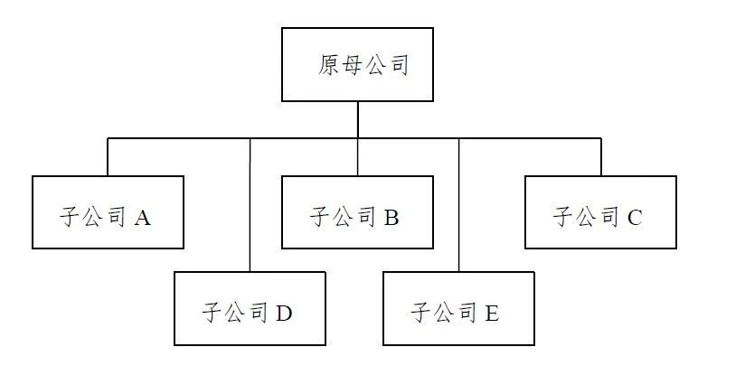
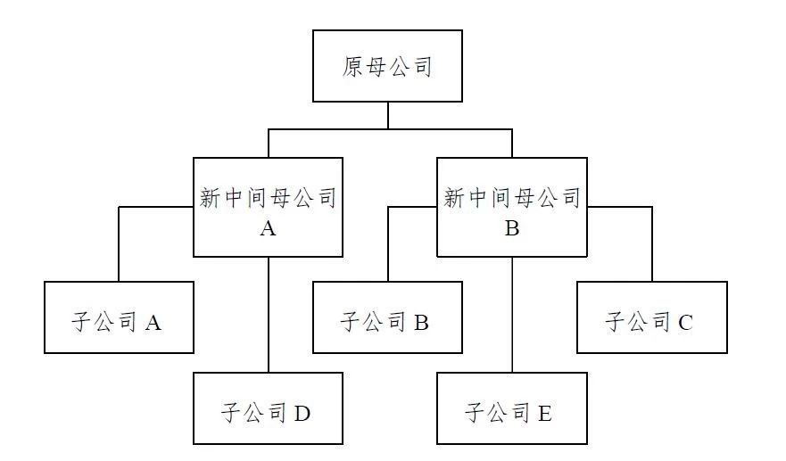

天职国际会计师事务所
拟IPO等目的集团重组中子公司投资成本的确定
IFRIC撤销议题选注20190819
在2011年7月、2011年9月的会议中，国际财务报告解释委员会（IFRIC）讨论了因拟IPO等目的新设母公司进行的集团重组中，新母公司对所注入子公司投资成本的确定问题，以下为该议题概要。
会议时间：2011年9月
议题：《国际会计准则第27号——合并和单独财务报表》——单独财务报表中的集团重组
议题概要：
解释委员会收到咨询，要求澄清《国际会计准则第27号》（2008年修订）第38B和38C段或《国际会计准则第27号》（2011年修订）第13和14段（注：①），是否可直接或类推适用于产生新的中间母公司并具有多个直接子公司的集团重组。该咨询问题是为解决新中间母公司对其子公司投资的会计处理，且其在单独财务报表中对此类投资按照《国际会计准则第27号》（2008年修订）第38（1）段或《国际会计准则第27号》（2011年修订）第10（1）段（注：②）规定，以成本进行会计处理。
委员会指出，《国际会计准则第27号》（2008年修订）第38（1）段或《国际会计准则第27号》（2011年修订）第10（1）段下确定对子公司投资成本的正常基础，适用于产生新中间母公司并具有多个直接子公司的重组。《国际会计准则第27号》（2008年修订）第38B和38C段或《国际会计准则第27号》（2011年修订）第13和14段仅适用于重组前后新集团和原集团（或原主体）的资产和负债相同的情况。委员会注意到，产生新中间母公司并具有多个直接子公司的重组不满足前述段落的条件，因此，《国际会计准则第27号》前述段落不适用于咨询问题所述的重组（注：③）。此外，委员会强调，理事会在《国际会计准则第27号》（2008年修订）第BC66Q段和《国际会计准则第27号》（2011年修订）第BC27段（注：④）分别解释了，《国际会计准则第27号》（2008年修订）第38B和38C段或《国际会计准则第27号》（2011年修订）第13和14段不适用于其他类型的重组。此外，委员会强调，《国际会计准则第27号》（2008年修订）第38B和38C段或《国际会计准则第27号》（2011年修订）第13和14段不能类推适用于产生新中间母公司并具有多个直接子公司的重组，因为这些指引是《国际会计准则第27号》（2008年修订）第38（1）段或《国际会计准则第27号》（2011年修订）第10（1）段下确定对子公司投资成本的正常基础的例外。
综上分析，委员会强调，《国际会计准则第27号》（2008年修订）和《国际会计准则第27号》（2011年修订）已提供了充分的指引。因此，委员会决议不将该问题纳入其议程。
注：
①《国际会计准则第27号》（2008年修订）第38B和38C段或《国际会计准则第27号》（2011年修订）第13和14段：
IAS 27(2008)第38B段［IAS 27(2011)第13段］：
“当母公司通过设立新的主体作为其母公司而对集团进行结构重组时，如果符合以下条件：
（1）新的母公司通过发行权益工具交换原母公司的权益工具来获得对原母公司的控制；
（2）在重组前后，新集团和原集团的资产和负债相同；以及
（3）重组前原母公司的所有者对原集团和新集团重组前后的净资产具有相同的绝对和相对权益，
并且，在单独财务报表中新母公司根据第10段（1）的规定核算其对原母公司的投资，新母公司应以重组日原母公司单独财务报表中权益项目中所占份额的账面金额作为对原母公司投资的成本。”
IAS 27(2008) 第38C段［IAS 27(2011)第14段］：
“相似地，不是母公司的主体可能采用符合第13段条件的方式设立新主体作为其母公司。第13段的要求同样适用于这类重组。在这类情形下，“原母公司”和“原集团”都指的是“原主体”。
②《国际会计准则第27号》（2008年修订）第38（1）段或《国际会计准则第27号》（2011年修订）第10（1）段：
“主体编制单独财务报表时，对子公司、合营企业和联营企业投资应采用以下方法核算：（1）成本，……”
③IFRS Interpretations Committee Meeting Agenda reference 7 Staff Paper July 2011摘要
1、咨询案例背景
该咨询问题是为解决集团重组问题，在该重组中，拥有多个子公司的原母公司在其自身与多个子公司之间设立了新中间母公司，并以股份对股份交换，通常称为“一对多”母子公司关系，具体如下图所示。此类重组通常发生于首次公开发行（IPO）之前。
（1）重组前：

（2）重组后：

在此类重组中，新中间母公司通常以其自身的权益工具（即发行给原母公司的权益工具）换取原母公司在子公司中的权益。也就是说，例如，新中间母公司A在上述情况下收购了原母公司在子公司A和子公司D中的股权，以换取作为重组的一部分向原母公司发行的新权益工具。
2、咨询问题分析
咨询者指出，对于前述重组类型（即具有“一对多”母子公司关系的重组）是否适用原账面价值基础，实务中存在三种不同的观点：
（1）观点1 以支付对价公允价值计量：该观点支持者认为，新中间母公司应当以其向原母公司发行以交换对子公司投资的权益工具的公允价值，来确定其对子公司投资的成本。对于咨询案例所述的重组类型，所发行权益工具的公允价值通常等于新中间母公司在子公司中的权益。他们认为该方法是以所支付对价公允价值确定成本一般原则的适当方式，《国际会计准则第27号》（2008年修订）第38B和38C段是一般原则的例外。该观点的支持者反对采用原账面价值基础的理由如下：
①案例所述重组类型不属于《国际会计准则第27号》（2008年修订）第38B和38C段的范围；以及
②类推采用一般原则的例外是不适当的。
（2）观点2 以原账面价值基础计量：该观点的支持者认为，新中间母公司应当以原账面价值基础来确定问题所述重组类型中其对子公司投资的成本。他们得出该结论的原因是，他们认为此类重组属于《国际会计准则第27号》（2008年修订）第38B和38C段的范围。
（3）观点3 会计政策选择：该观点的支持者认为，新中间母公司具有一项会计政策选择权，在问题所述重组类型中，可以支付对价的公允价值或原账面价值基础来确定其对子公司投资的成本。他们赞同观点1，此类重组不属于《国际会计准则第27号》（2008年修订）第38B和38C段的范围。但是，不同于观点1的支持者，他们认为，有可能将此类重组类推采用原账面价值基础。这将导致其既可以采用一般原则，即以支付对价公允价值确定成本，也可以类推采用原账面价值基础。该观点的支持者认为可类推采用原账面价值基础的理由如下：
①他们强调，《国际会计准则第27号》（2008年修订）第BC66Q段，现行国际财务报告准则并未提供单独财务报表中其他同一控制下交易的具体会计处理指引；以及
②他们认为，针对所产生新母公司仅具有一个子公司或多个子公司的集团重组采用不同的会计处理，没有令人信服的理由。
咨询者强调，前述所有观点均赞同，《国际会计准则第27号》（2008年修订）第38B段并未要求产生新中间母公司并具有多个子公司的重组采用原账面价值基础。相反，他们主要是讨论《国际会计准则第27号》（2008年修订）第38C段是否导致此类重组采用原账面价值基础。
3、IFRIC职员分析
IFRIC职员首先强调，《国际会计准则第27号》（2008年修订）第38B和38C段与《国际会计准则第27号》（2011年修订）第13和14段实质一致，故以《国际会计准则第27号》（2008年修订）第38B和38C段为基础进行分析。
IFRIC职员认为，咨询问题所述的不同观点，将对以下两个单独考虑的问题产生不同的结论：
（1）新中间母公司A和B，是否应当以重组日原母公司单独财务报表中在子公司权益项目中所占份额的账面价值，来计量其在子公司中的投资成本，因为它们属于《国际会计准则第27号》（2008年修订）第38B和38C段的范围？或者
（2）新中间母公司A和B是否：
①被允许以重组日原母公司单独财务报表中在子公司权益项目中所占份额的账面价值，来计量其在子公司中的投资成本，因为它们可根据《国际会计准则第8号——会计政策、会计估计变更和差错》，类推适用《国际会计准则第27号》（2008年修订）第38B和38C段的指引；或
②被要求应采用一般原则，以交换对子公司投资支付对价的公允价值来确定成本？
关于是否属于《国际会计准则第27号》（2008年修订）第38B和38C段的范围
IFRIC赞同咨询者的意见，《国际会计准则第27号》（2008年修订）第38B段不适用于咨询问题所述情况，不要求其以原账面价值基础进行计量。《国际会计准则第27号》（2008年修订）第38B仅适用于原母公司设立新主体作为其母公司（“当母公司通过设立新的主体作为其母公司而对集团进行结构重组”）。在咨询问题所述情况中，新中间母公司A和B是作为原母公司的子公司设立的。
此外，IFRIC职员赞同咨询者的意见，不同观点的分歧在于对《国际会计准则第27号》（2008年修订）第38C段所述重组的解释不同，从而导致不同观点支持者对作为对《国际会计准则第27号》（2008年修订）第38B段的修订的《国际会计准则第27号》（2008年修订）第38C段的理解不同。
IFRIC职员认为，《国际会计准则第27号》（2008年修订）第38C段的目的，是要求主体（如咨询问题所述的子公司A）设立一个新主体作为其母公司，且该主体在重组前并非母公司的重组［参见《国际会计准则第27号》（2008年修订）第BC66N（2）段］，也采用原账面价值基础。而《国际会计准则第27号》（2008年修订）第38B段仅适用于该主体在重组前已是母公司的情况。
IFRIC职员理解，根据《国际会计准则第27号》（2008年修订）第38C段对《国际会计准则第27号》（2008年修订）第38B段进行的修订如下：
“当母公司不属于母公司的主体通过设立新的主体作为其母公司而对集团进行结构重组时，如果符合以下条件：
（1）新的母公司通过发行权益工具交换原母公司主体的权益工具来获得对原母公司主体的控制；
（2）在重组前后，新集团和原集团主体的资产和负债相同；以及
（3）重组前原母公司主体的所有者对原集团主体和新集团重组前后的净资产具有相同的绝对和相对权益，
并且，在单独财务报表中新母公司根据第10段（1）的规定核算其对原母公司主体的投资，新母公司应以重组日原母公司主体单独财务报表中权益项目中所占份额的账面金额作为对原母公司主体投资的成本。”
上述对《国际会计准则第27号》（2008年修订）第38C段的理解，与咨询问题所述的观点1的理解一致。
综上所述，IFRIC职员赞同观点1和观点3的支持者的意见，产生新中间母公司并具有多个子公司的集团重组，不属于《国际会计准则第27号》（2008年修订）第38B和38C段的范围，因为其并不满足第38B段条件（2）（即重组前后，新集团和原集团的资产和负债并不相同）。例如，对于新中间母公司A，其包含了“子公司D”的资产和负债，但原主体“子公司A”并不包含该资产和负债。
关于是否可类推适用《国际会计准则第27号》（2008年修订）第38B段
IFRIC职员认为，《国际会计准则第27号》（2008年修订）并未对第38（1）段中的“成本”进行定义，从而赞同咨询问题所述，对于在集团内设立中间母公司的主体，在按照《国际会计准则第27号》（2008年修订）第38（1）段对其单独财务报表中对子公司投资进行会计处理时，应当如何确定其在子公司中的投资成本，现行准则并未提供明确指引。
因此，主体应根据《国际会计准则第8号》第10-12段确定适当的会计政策。在作出所需的判断时，除其他事项外，主体应参考并考虑国际财务报告准则中处理类似及相关问题的要求的适用性。
IFRIC职员赞同观点1的意见，确定《国际会计准则第27号》（2008年修订）第38（1）段范围内投资成本的一般原则，是为该投资支付对价的公允价值。
该一般原则也反映了单独财务报表的基本概念，即此类财务报表反映了与单独法律主体之间的界限。因此，《国际会计准则第27号》（2008年修订）将单独财务报表定义为，以直接权益为基础核算对被投资方的投资，而不是以被投资方报告的经营成果和净资产为基础进行核算的财务报表（编者注：IASB于2014年8月发布的《单独财务报表中的权益法——对国际会计准则第27号的修订》对该定义进行了修订，减弱了单独财务报表的该性质）。
此外，IFRIC职员赞同观点1的意见，作为一般原则的例外，类推适用《国际会计准则第27号》（2008年修订）第38B段是不适当的。但是，如果基本原则和例外特征也与通过类比应用例外的方案相关，则情况并非如此。
相反，咨询问题所述案例与《国际会计准则第27号》（2008年修订）第38B和38C段所述的重组不具有相同特征，因为新集团和原主体或原集团的资产和负债，在重组前后并不相同。
此外，IFRIC职员认为，理事会在《国际会计准则第27号》（2008年修订）第BC66Q段解释了，其并不希望在确定适当会计政策时，考虑《国际会计准则第27号》（2008年修订）第38B和38C段的指引：
“……因此，理事会希望主体继续按照相应的会计政策处理不满足第38B和第38C段条件的交易。”
使用“继续”表明理事会希望主体使用《国际会计准则第27号》增加第38B和第38C段之前所确定的会计政策。因此，如果会计政策已确定，则不再适用38B和第38C段的指引，且理事会不希望主体基于38B和第38C段的新指引发展新的会计政策。
综上所述，IFRIC职员赞同观点1的意见，原账面价值基础不能类推适用于产生新中间母公司并具有多个子公司的集团重组。此类母公司应当以支付对价的公允价值计量其对子公司的投资，在咨询问题所述重组类型中，即向原母公司发行权益工具的公允价值，通常等于新中间母公司享有子公司权益份额的公允价值。
④《国际会计准则第27号》（2008年修订）结论基础第BC66K至BC66Q段和《国际会计准则第27号》（2011年修订）结论基础第BC21至BC27段：
“新母公司单独财务报表中成本的计量
2007年，理事会收到了关于母公司通过设立新的主体作为其母公司的方式对集团结构进行重组时如何适用第10段（1）的征询。新的母公司通过发行权益工具交换原母公司权益工具获得了原母公司的控制权。
在这一类型的重组中，重组前后新集团和原集团的资产和负债完全相同。除此之外，重组后，原母公司的所有者对新集团净资产享有的相对和绝对权益与他们在重组前在原集团净资产享有的相对和绝对权益相同。最后，这一类型的重组涉及现存主体及其股东同意在它们之间设立新的母公司。与此形成对比的是，大多数形成母子公司关系的交易或事项由母公司发起，将某主体在集团结构中置于其之下。
因此，理事会决定，母公司以上述特定方式设立新母公司这种有限情况下应用第10段（1）时，新母公司应当以重组日其所享有的原母公司单独财务报表中权益项目的份额的账面价值计量投资成本。2007年12月，理事会发布的修订《国际会计准则第27号》的征求意见稿中增加了关于这一要求的段落。
在对收到的反馈意见者作出回应时，理事会修订了征求意见稿中建议的修订（第13段和第14段），以明确上述要求适用于以下类型的重组，如果它们满足建议的修订所提出的条件：
（1）新母公司没有获得原母公司全部权益工具的重组。例如，新母公司可能发行权益工具交换原母公司的普通股，但是没有获得原母公司的优先股。此外，新母公司获得了原母公司的控制权，但是没有获得原母公司所有的普通股。
（2）在集团内部设立中层母公司，并且设立集团新的最终母公司。
（3）不是母公司的主体建立新的主体作为其母公司的重组。
此外，理事会明确上述修订是注重于一项资产的计量，即在新母公司单独财务报表中新母公司对原母公司的投资。该修订不适用于新母公司或原母公司单独财务报表或合并财务报表中任何其他资产或负债的计量。
理事会将该修订包含在2008年5月发布的《在子公司、共同控制主体或联营企业中投资的成本》中。
理事会没有更广泛地考虑其他类型重组或同一控制交易的会计处理。因此，第13段和第14段仅适用于满足这些段落所提条件的情形。因此，理事会希望主体继续按照相应的会计政策处理不满足第13段和第14段条件的交易。理事会计划在未来关于同一控制交易的项目中考虑同一控制的定义和同一控制下企业合并的会计处理。”
释：
在现行国际财务报告准则下，并未对同一控制下企业合并的会计处理进行明确规定，国际会计准则理事会（IASB）目前正在进行的“同一控制下企业合并”项目将考虑制定相关会计处理规定，理事会预计将于2020年第一季度发布相关讨论稿。
现行《国际会计准则第27号》（2011年修订）第13和14段［即《国际会计准则第27号》（2008年修订）第38B和38C段］所规定的集团内特殊重组，属于同一控制下企业合并的特殊交易之一。对于《国际会计准则第27号》（2011年修订）第13和14段范围内的集团重组，新母公司应以重组日原母公司单独财务报表中享有子公司权益账面价值的份额作为对原母公司投资的成本（“原账面价值法”）。该处理类似于我国企业会计准则下，通过同一控制下企业合并取得子公司投资成本的确认方法。但是，要采用该方法，需要满足《国际会计准则第27号》（2011年修订）第13和14段的严格条件，即：
“当母公司通过设立新的主体作为其母公司而对集团进行结构重组时，如果符合以下条件：
（1）新的母公司通过发行权益工具交换原母公司的权益工具来获得对原母公司的控制；
（2）在重组前后，新集团和原集团的资产和负债相同；以及
（3）重组前原母公司的所有者对原集团和新集团重组前后的净资产具有相同的绝对和相对权益，
并且，在单独财务报表中新母公司根据第10段（1）的规定核算其对原母公司的投资。”
同时，IFRIC在本议题中进一步解释了《国际会计准则第27号》（2011年修订）第14段的含义，它将第13段的条件修改为：
“当不属于母公司的主体通过设立新的主体作为其母公司而对集团进行结构重组时，如果符合以下条件：
（1）新的母公司通过发行权益工具交换原主体的权益工具来获得对原主体的控制；
（2）在重组前后，新集团和原主体的资产和负债相同；以及
（3）重组前原主体的所有者对原主体和新集团重组前后的净资产具有相同的绝对和相对权益，
并且，在单独财务报表中新母公司根据第10段（1）的规定核算其对原主体的投资。”
在IFRIC讨论的本议题中，集团原母公司新设立了多个中间母公司，并将原持有子公司分别注入新设的中间母公司中。IFRIC的讨论强调：
（1）议题所述案例不属于《国际会计准则第27号》（2011年修订）第13和14段的范围。这是因为，新设立中间母公司所持有子公司的资产和负债，在重组前后并不完全相同。
（2）《国际会计准则第27号》（2011年修订）第13和14段的规定不能类推到其他同一控制下交易。
因此，在IFRIC讨论的议题中，新设母公司A和B在其单独财务报表中，应当以向原母公司发行权益工具的公允价值来确定对子公司投资的成本，该公允价值一般等于其享有子公司净资产公允价值的份额。
值得注意的是，在我国现行企业会计准则下，对于同一控制下企业合并取得的子公司，在个别财务报表层面，统一采用享有被投资方净资产账面价值份额（“原账面价值法”）确认其投资成本。我国现行企业会计准则并未将该方法限制在满足《国际会计准则第27号》（2011年修订）第13和14段条件的特殊集团重组中，其适用范围要大于国际财务报告准则的范围。对于IFRIC所讨论案例，在我国企业会计准则下，新中间母公司A和B取得子公司投资很可能满足同一控制下企业合并的定义，需要以享有被投资方净资产账面价值份额确定子公司投资成本。如前所述，在国际财务报告准则下，新中间母公司A和B应当以向原母公司发行权益工具的公允价值来确定对子公司投资的成本，该公允价值一般等于其享有子公司净资产公允价值的份额。因此，对于IFRIC所讨论案例，我国企业会计准则与国际财务报告准则下的认定可能产生差异。